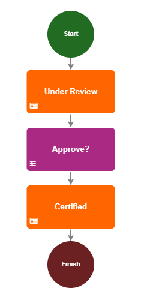
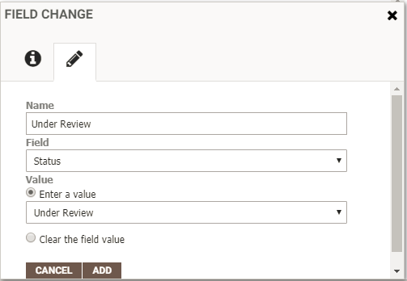
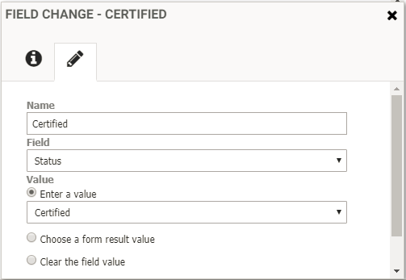
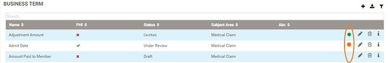
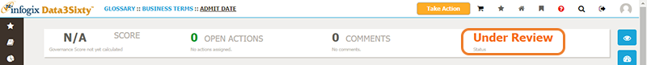
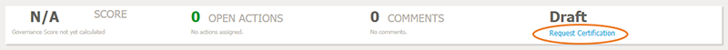

|
|
Certification workflow
One way to set up a workflow to certify business assets is by using the Request Certification workflow trigger. This allows users to request certification of an artifact from an artifact's detail page.
Prerequisites:
- The artifact must have a field called "Status".
- The API name must also be "Status".
- The Status field must be a list field which contains the following three statuses: Draft, Under Review and Certified.
- Click the Administration icon on the left of the screen and select Workflow > Workflow.
- Click the Add icon in the top right corner of the Workflow Types panel to create a new workflow:

- In the New Workflow Type panel, type a Name for the workflow, for example "Certify Business Assets".
- From the Change Type list, select Request Certification as the workflow trigger.
- From the Object Type list, select the item type to which you want to relate the workflow.
- Build your certification workflow by dragging the relevant activities from the left of the screen onto the editing area. To connect the workflow activities, click and drag from a point on one activity to connect it to a point on the next. If you need to go back and delete a connection, select the connection that you want to remove, then press the Delete key.
In this example, we will use the following activities to build a certification workflow:
- Start
- Field Change
- Form
- Field Change
- Finish
Tip: In a certification workflow, items typically move from Under Review to Certified once a reviewer has approved the action. It is assumed that the items are initially in Draft status. The Draft status can be applied to items via a separate workflow. The Request Certification process can only be initiated on an artifact when the item is in Draft status and a certification workflow has been created. So it might be that you have two separate workflows, for example, one where an artifact status is changed to Draft when it is newly added to the system, and then a second where the item goes through the certification process.

Step Workflow activity Description 1 Start Marks the entry into the workflow. 2 Field Change - "Under Review" Select the Field Change activity, then click the Edit tab and configure the properties as follows:

3 Form Provides a custom form that is inserted into the workflow giving a reviewer the opportunity to certify, see Creating a form.
In this example, the form would include one boolean value that allows the reviewer to certify or reject the action.
4 Field Change - "Certified" Select the Field Change activity, then click the Edit tab and configure the properties as follows:

5 Finish Marks the successful completion of the workflow. When a certification workflow has been set up, an orange (Under Review) or green (Certified) colored icon is displayed next to the edit icon on the asset list to indicate the status of the item:

On the detail page of an asset, the status is displayed at the top of the page:

If an item has been assigned the Draft status as part of a separate workflow, a gray icon is displayed next to the edit icon on the asset list, and gray text is used to display the status in the summary bar at the top of an asset detail page.
If a certification workflow has been established (using the Request Certification workflow trigger), users can click the Request Certification link at the top of an asset detail page for items in Draft status to initiate the certification workflow.

Note: An item can only be added to the Draft status if it has a custom list field named "Status" with the values Draft, Under Review and Certified.
Tip: You can create Responsibility Rules to enable you to restrict who can see items that are in a certain status, see Assigning users or groups to responsibilities.